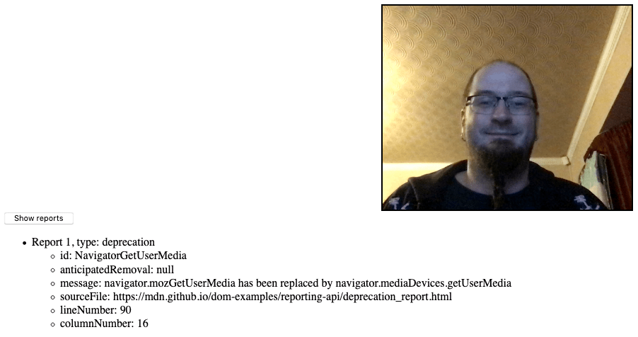

Reporting API
Experimental: This is an experimental technology
Check the Browser compatibility table carefully before using this in production.
The Reporting API provides a generic reporting mechanism for web applications to use to make reports available based on various platform features (for example Content Security Policy, Permissions-Policy, or feature deprecation reports) in a consistent manner.
Concepts and usage
There are several different features and problems on the web platform that generate information useful to web developers when they are trying to fix bugs or improve their websites in other ways. Such information can include:
- Content Security Policy violations.
- Permissions-Policy violations.
- Deprecated feature usage (when you are using something that will stop working soon in browsers).
- Occurrence of crashes.
- Occurrence of user-agent interventions (when the browser blocks something your code is trying to do because it is deemed a security risk for example, or just plain annoying, like auto-playing audio).
The Reporting API's purpose is to provide a consistent reporting mechanism that can be used to make such information available to developers in the form of reports represented by JavaScript objects. There are a few ways to use it, which are detailed in the sections below.
Origins and endpoints
Each unique origin you want to retrieve reports for can be given a series of endpoints, which are URLs that can receive given reports from a user agent.
The Report-To HTTP header is used to specify details about the different endpoints that a user-agent has available to it for delivering reports to. You can then retrieve reports by making a request to those URLs.
The endpoints are arranged into groups; an endpoint group can work together to provide load balancing (each endpoint will receive a specified proportion of report traffic) and safeguarding against failure (fallback endpoints can be specified to use if the primary ones fail).
Note: There is no absolute guarantee of report delivery — a report could still fail to be collected if a serious error occurs.
Reports sent to endpoints can be retrieved independently of the running of the websites they relate to, which is useful — a crash for example could bring down a web site and stop anything running, but a report could still be obtained to give the developer some clues as to why it happened.
Reporting observers
Reports can also be obtained via ReportingObserver objects created via JavaScript inside the website you are aiming to get reports on. This method is not as failsafe as the Report-To method described above — any page crash could stop you retrieving the reports — but it is easier to set up, and more flexible.
A ReportingObserver object is created using the ReportingObserver() constructor, which is passed two parameters:
- A callback function that has available as parameters the reports available in the observer's report queue, and a copy of the same
ReportingObserverobject, so observation can be controlled directly from inside the callback. The callback runs when observation starts - An options dictionary that allows you to specify the type of reports to collect, and whether the reports that were generated before the observer was able to be created should be observable (
buffered: true).
Methods are then available on the observer to start collecting reports (ReportingObserver.observe()), retrieve the reports currently in the report queue (ReportingObserver.takeRecords()), and disconnect the observer so it can no longer collect records (ReportingObserver.disconnect()).
Generating reports via WebDriver
The Reporting API spec also defines a Generate Test Report WebDriver extension, which allows you to simulate report generation during automation. Reports generated via WebDriver are observed by any registered ReportObserver objects present in the loaded website. This is not yet documented.
Interfaces
CSPViolationReportBody-
Contains details of a Content Security Policy violation.
DeprecationReportBody-
Contains details of deprecated web platform features that a website is using.
InterventionReportBody-
Contains details of an intervention report, which is generated when a request made by the website has been denied by the browser; e.g. for security reasons.
Report-
An object representing a single report.
ReportingObserver-
An object that can be used to collect and access reports as they are generated.
Examples
In our deprecation_report.html example, we create a simple reporting observer to observe usage of deprecated features on our web page:
const options = {
types: ["deprecation"],
buffered: true,
};
const observer = new ReportingObserver((reports, observer) => {
reportBtn.onclick = () => displayReports(reports);
}, options);
We then tell it to start observing reports using ReportingObserver.observe(); this tells the observer to start collecting reports in its report queue, and runs the callback function specified inside the constructor:
observer.observe();
Later on in the example we deliberately use the deprecated version of MediaDevices.getUserMedia():
if (navigator.mozGetUserMedia) {
navigator.mozGetUserMedia(constraints, success, failure);
} else {
navigator.getUserMedia(constraints, success, failure);
}
This causes a deprecation report to be generated; because of the event handler we set up inside the ReportingObserver() constructor, we can now click the button to display the report details.

Note: If you look at the complete source code, you'll notice that we actually call the deprecated getUserMedia() method twice. After the first time we call ReportingObserver.takeRecords(), which returns the first generated report and empties the queue. Because of this, when the button is pressed only the second report is listed.
Specifications
| Specification |
|---|
| Reporting API # intro |
Browser compatibility
Support is at an early stage right now. Firefox supports the JavaScript API and the Report-To header behind preferences:
- JavaScript API:
dom.reporting.enabled(enabled in nightly only) - HTTP header:
dom.reporting.header.enabled
Chrome is also working on an implementation: information about Chrome implementation.